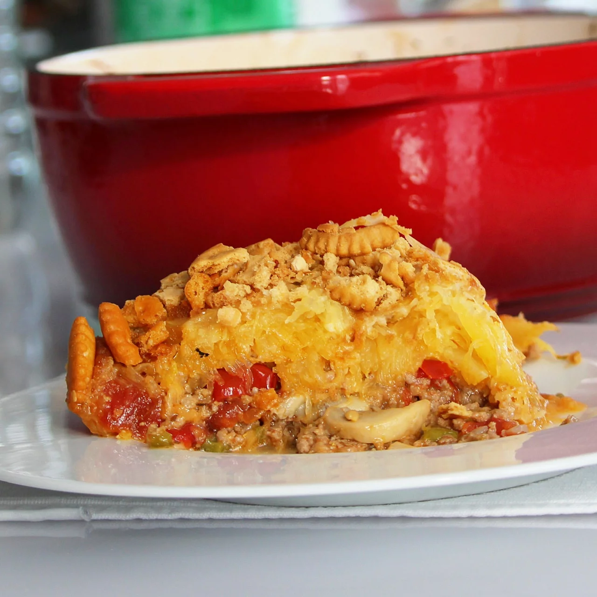

Spaghetti Squash Beef Casserole

Description
Yummy spaghetti squash dish!
Ingredients
- 2 teaspoons butter, melted
- 1 spaghetti squash, halved and seeded
- 1 pound ground beef
- 1 (14.5 ounce) can diced tomatoes, drained
- ½ (8 ounce) package sliced fresh mushrooms
¼ cup diced red onion
¼ cup diced green bell pepper
1 clove garlic, chopped
½ teaspoon dried oregano
½ teaspoon dried basil
¼ teaspoon salt
¼ teaspoon ground black pepper
1 pinch dried thyme
2 ½ cups shredded mozzarella cheese
1 cup crushed buttery round crackers (such as Ritz®)
Steps
- Preheat oven to 375 degrees F (190 degrees C)
- Brush butter lightly over squash halves. Cover with aluminum foil
- Bake in the preheated oven until easily pierced with a fork, about 40 minutes. Cool until easily handled, about 15 minutes
- Preheat a large skillet over medium heat. Add ground beef; cook and stir until browned, about 5 minutes. Stir in tomatoes, mushrooms, red onion, green bell pepper, garlic, oregano, basil, salt, pepper, and thyme; cook, stirring occasionally, until flavors combine, 6 to 8 minutes
- Scrape squash flesh into the skillet; mix into the beef mixture. Spoon into a large casserole dish. Fold in mozzarella cheese; top with crushed crackers
- Bake in the preheated oven until golden brown, about 40 minutes